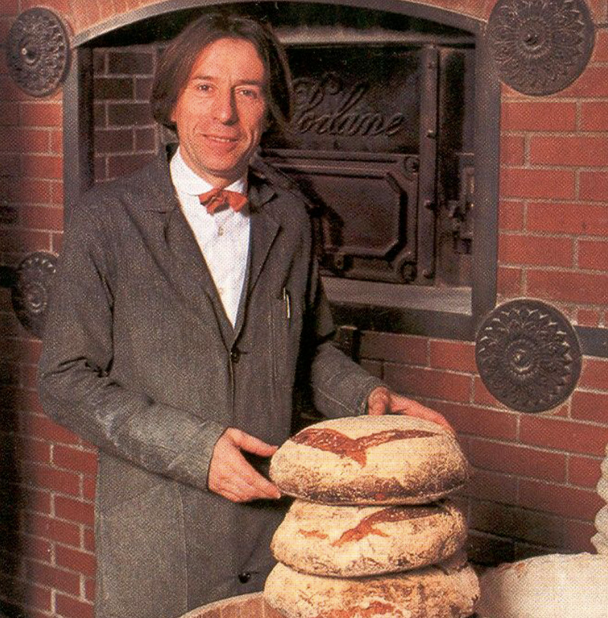
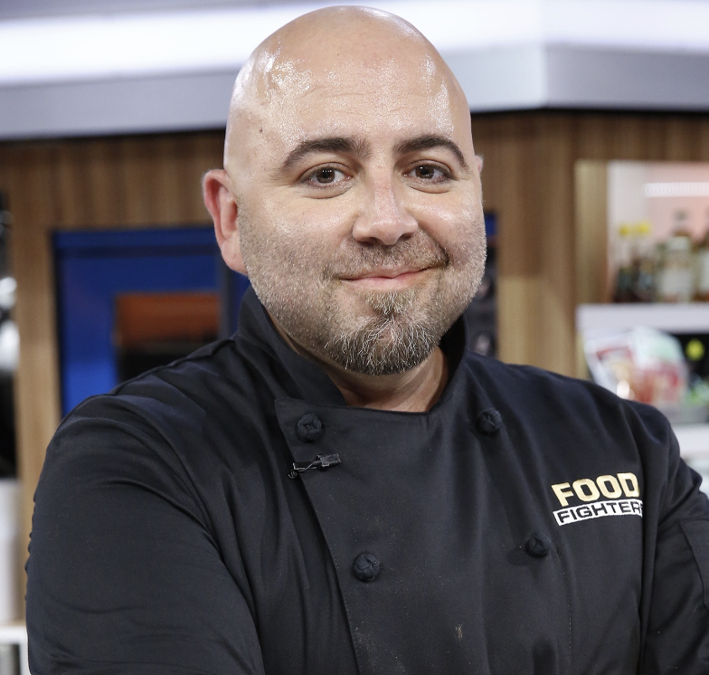

Famus Bakers!
Paul Hollywood is a British celebrity chef known for his judging role on "The Great British Bake Off." With his straightforward critiques, he's become an iconic figure in the baking world. His expertise in bread and pastry making is widely respected, earning him a global following. Besides being on TV, he has authored many cookbooks. Despite occasional controversies, he remains an influential figure, inspiring many to pursue baking as a hobby or profession. Overall, Paul Hollywood's contributions has left a positive mark on the world of baking.
Lionel Poilâne was a French baker and entrepreneur known for revolutionizing the art of breadmaking. He inherited his family's bakery in Paris and transformed it into a bakery famous for its traditional sourdough bread. His use of high-quality, locally-sourced ingredients and traditional baking methods earned him international fame. His signature "Pain Poilâne" loaf, known by its thick crust and dense, flavorful crumb, became a symbol of handmade bread worldwide. Poilâne's dedication to keeping traditional techniques and flavors earned him the nickname "The King of Bread." Despite his passing in 2002, Poilâne's legacy lives on through his bakery, which continues to make and sell delicious bread loved by bread bakers globally.
Duff Goldman is a famous baker and TV star known for making incredible cakes. He became really popular on the Food Networks “Ace of Cakes” show, where he made all sorts of cool and fun cakes at his bakery, Charm City Cakes in Baltimore. Many people love his use of intricate designs and how he has made baking look so fun and enjoyable. Other than being on TV, he’s written books to help others learn to bake and still goes to events to share his love for baking. He has made a big impact on the baking world and has inspired lots of people to start baking.
